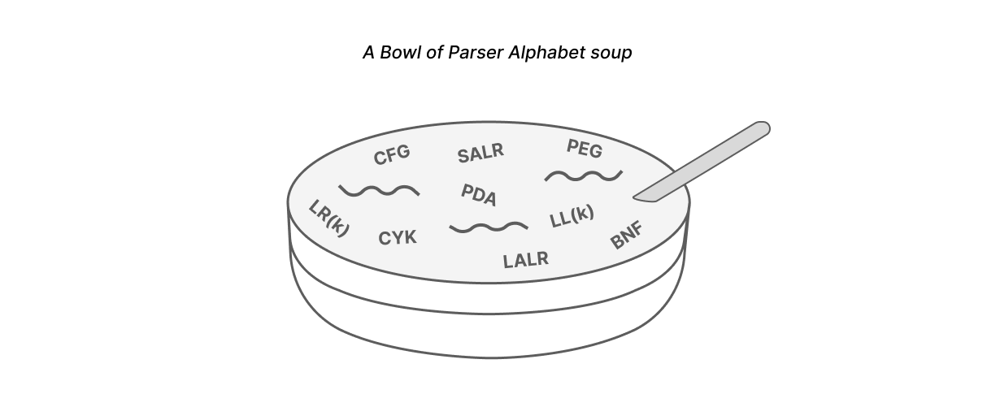
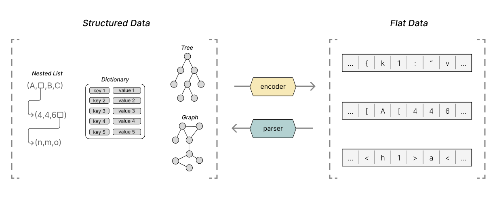
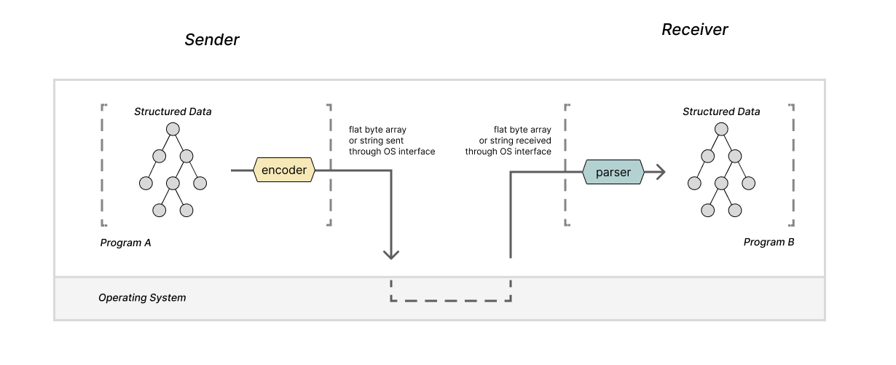

Parsers (and Encoders) Everywhere
Originally Authored: June 2023 | Last Updated: June 2023 | Reading time: ~30 min | Author: Beau Carlborg
Article contents:
1: Encountering and attempting to learn parsers
2: Coming to see parser's broad applicability
3: Parsers and encoders in the real world
4: Takeaways
In this article, I'd like to describe my experience learning about parsers and I'd like to develop some of the realizations that I came to as a result of spending so much time thinking about parsing.
I started learning about parsers while trying to learn about compilers. There is some debate about the value of focusing deeply on parsing in a compiler curriculum, but the topic captured my interest, so I decided to spend some time really trying to understand it.
As it turns out, really understanding how parser work is a tricky business. There is a lot of theory involved, and the resources available to learn it are pretty terse. I spent quite some time trying to deeply understand how parsers work and mostly didn't succeed.
But somewhere along the way, I had a realization about parsers that led me to appreciate their wide ranging applicability in software. Thinking about the need for parsing in these broad terms eventually led me to a new way of thinking about programs. It led me to start seeing that most programs need to communicate information using strings or byte arrays, and in order to do that, most programs need to have a parser or encoder at the edge of their functionality.
This article is technical in that I spend a lot of time talking about programs, their interfaces, as well as parsing and encoding formats, but it is not a reference or tutorial on parsing. This article is mostly about how considering parsing deeply caused me to see software in a new way.
Because of the nature of the topic, I spend a lot of time developing some "simple" or "obvious" ideas about how software works or what software does. These were lines of thoughts that were interesting for me to explore.
It strikes me that a reader who has already had these realizations may find this article boring, slow or even banal. But, my hope is that a reader who hasn't yet had the chance to think deeply about some of these topics will end up coming to some of the same interesting realizations that I came to.
It's a long and casual read, so I'd imagine it may be best enjoyed with some sort of drink. Let's begin.
1: Encountering and attempting to learn parsers
I encountered parsers as a topic worth studying while learning about compilers. I'll give a brief overview of a parser's role in a compiler, and then I'll describe my initial attempt to understand parsers. If you aren't very interested in this little narrative, you can skip straight to section 2.
Parsers: a phase in a compiler
Most compilers are organized as a series of phases. Those phases can be grouped into frontend phases, and backend phases. The frontend is responsible for processing and text of your program while the backend is responsible for optimizing your program and outputting instructions for your target machine.

The lexer and parser are the earliest stages of the compiler. Together, they extract a structured representation of the program from the input text.
The lexer processes the program's text character by character, and outputs a stream of tokens. It transforms our program by grouping the input characters together into a series of tokens. The lexer passes these tokens to the parser. The parser then takes that stream of tokens and builds an abstract syntax tree representing the program's structure. While it constructs that tree, the parser also verifies that the input program's syntax is correct.

When learning about compilers, the parsing phase immediately captured my interest. There is something a bit magical about what the parser does. The parser takes a flat list of words from a text file and extracts a structured representation of a program. Other phases then can apply transformations or verifications to that structured representation, but it is the parser that bootstraps us up from a meager ol' list of words to a meaningful representation of a program.
Down the parsing rabbit hole
I decided to focus on parsers and attempt to deeply understand them before moving onto other compiler phases. I quickly realized, learning about parsers is difficult, surprisingly difficult.
I tried to use the compiler resources to understand parsers, but I was struggling. I felt lost in discussions comparing one parsing approach to another. I didn't really understand the different categories of parsers. Some of the books hold your hand through a parser implementation or two, others teach you how to use a parser generator, but I just wasn't getting it.
I was learning the names of the parsing algorithms, and I was absorbing some of the acronyms and jargon... but the essence of parsing remained elusive. I decided to take some steps back, and view the problem at a high level. I would try to find generic, non-compiler related resources on parsing. My approach was to begin with top level parser definitions and then dig deeper.
If you search around for a definition of a parser in the context of computer science, you are very likely to find something along the lines of:
Parsers are software components or programs that analyze input data by following a set of predefined rules or patterns. Their main objective is to examine a sequence of symbols or tokens and understand their intended structure and meaning.
Reading a definition like this, we see that a parser takes a stream of input characters and outputs something that is structured and meaningful. But the definitions don't reveal much beyond that. To me, these definitions almost lend parsers a mystic quality... Parsers find meaning in symbols. Parsers extract structure from the structureless. Parsers extract meaning and truth from all. Parsers are the one ring to rule them all.
The broad definitions for parsers left me a bit unsatisfied, but they did continue to pique my interest. I decided that if compiler resources couldn't help me learn about parsers, and I couldn't easily find a good definition, I should go explore the theory that underpins parsers. This line of exploration turned out to be a deep rabbit hole that I would spend a lot of time climbing out of.
Parsers are, at their core, a way to process text. Because of this, the theory that backs parsers is deeply tied with formal language theory (a field also very concerned with processing text) and automaton theory (a field about abstract computing machines that process input streams of text).
These two fields provide the theoretical backdrop for learning about parsers. I felt like this theory would be a good place to really learn what parsers are all about. So I decided to read books, articles, and papers about parsers in the context of these fields.

From formal language theory, I was trying to read about grammar, syntax, and semantics, trying to learn how different grammar constructions define certain classes of languages. From automaton theory, I was trying to read about finite state machines, push down automata, turing machines, and all of their deterministic and non-deterministic variants. And then I was trying to read about all the ways in which formal language theory is associated with automaton theory. I was reading a lot, and I was learning a lot. But I still wasn't really finding the understanding I wanted about parsing.
The theory forward approach of learning parsers wasn't panning out how I hoped it would, so I tried to get back to applied parsing algorithms. But opening that can of worms immediately leads you into comparisons of grammar subsets like LL, LR, SALR, and LALR and other means of defining parsers like PEGs. I learned enough to make some grammars compatible with an LL parser or LR parser. I learned How to write a PEF, and I even built a parser or two. But I still just wasn't grasping what I wanted to.
All and all, I just wasn't finding the understanding that I wanted from these resources. I certainly learned a lot, and parsers do make more sense to me now than they did a few months ago, but I still haven't had a moment where the mechanism behind a parser really clicks into focus. It was no help that many of the parsing resources available are pretty terse and that the topic matter is generally mired in too many acronyms.

The reason I want to highlight this experience is that learning parsing is hard! It is a tricky subject and there is a lot of information to unpack to even understand the acronyms people are using. Even if you find a simple parsing algorithm to work with, deeply understanding that algorithm can be hard. Learning enough to make educated comparisons between that algorithm and others is even harder.
But even though I haven't yet deeply understood parsers, I did eventually come to an understanding that helped me see how broadly applicable parsers are.
2: Coming to see parser's broad applicability
At some point, in my process of learning about parsing theory, I came to a realization that there is a simple, and clarifying definition for parsers that highlights how they can be used rather than how they work.
Viewing parser in this new light helped me see that parsers are incredibly applicable beyond compilers. I started to see that parsing, on some level, was incorporated into most programs I use.
A clarifying definition of parsing
Parsers (and their inverse: encoders) allow us to efficiently encode and decode complex structured data like graphs, trees, and dictionaries using flat data structures like strings and arrays of bytes.

This definition is only a slight rephrasing of other definitions for parsers you might come across. But something about this particular phrasing really stuck with me. I want to take some time to develop the ideas behind it.
The same definition, in two parts
Let's break down that definition into two parts in order to really absorb it:
Parsers (and their inverse: encoders) allow us to efficiently encode and decode complex structured data like graphs, trees, and dictionaries using flat data structures like strings and arrays of bytes.
What exactly do we mean by complex structured data? When I say structured data, I am imagining data structures like lists, graphs, trees and dictionaries. I am imagining any set of data that has values with mixed types. Data where each datum has relationships to other datum.
Every program, at some level, uses structured data. After all, it has been said that programs = data structures + algorithms.
But most of our programs simply cannot work in isolation. Many programs need to communicate with other programs on the same computer or over the internet in order to get their job done. The programs may share whole copies of their internal structure, or they may send small structured requests and responses. But, there is always some exchange of structured data.
For example, consider a web server sending new nodes for a browser to insert into a page's DOM. Or consider two servers sharing a copy of a user's information. Or even a client making a simple HTTP GET request to some server -- that simple request is still a form of structured data.
But how do programs actually do this? How do they take some complex structured data and change it into a format appropriate to be transmitted?

Programs have many interfaces available to communicate with each other from file IO, to sockets or shared memory. It turns out that the many of the common interfaces programs use to communicate with each other require that the data being sent is in the form of a string or byte array.
With this in mind, let's return to the provided definition of a parser and encoder:
Parsers (and their inverse: encoders) allow us to efficiently encode and decode complex structured data like graphs, trees, and dictionaries using flat data structures like strings and arrays of bytes.
Our programs want to communicate structured data with each other, but they only have the ability to send strings and arrays. Parsers and encoders are what will allow our programs to transform their structured data into those strings and arrays and back.
Two programs communicating with strings
It may belabor the point a bit for some readers, but I want to linger on the idea that most interfaces programs use strings and byte arrays as their medium. In some ways it is obvious, but the thought had never really occurred to me until I started considering parsers.
Programs almost always operate within the environment that an operating system provides. The operating system provides a number of interfaces that allow our program to communicate with other programs and the outside world, and many of these interfaces require that the data being sent is in the form of a string or byte array.
When you really internalize the fact that programs need to use strings in order to communicate, the need for parsers and encoders becomes very self evident. So I'd like to draw out some examples of these interactions.
For those readers who feel like the observation that most interfaces require data be a string or byte array is an obvious one, you can safely skip this section. For those readers who stay, you will be rewarded with some more nice diagrams and you will also be given a copy of K&R's The Unix Programming Environment to really drive the point home.
Just kidding, those who stay will only get the pictures üñºÔ∏è
Let's begin by considering two programs A and B running on the same computer. These programs want to communicate some structured data to each other using the operating system. With the interfaces that the OS provides -- like sockets, files, and pipes -- the message our programs transmit and receive will need to be strings or arrays of bytes. Because of this, the programs will need to leverage an encoder and parser in order to convert the structured data to and from strings.

Let's consider a similar, but slightly different example. Consider two programs running on separate machines that want to communicate. The operating system provides interfaces for programs to do this -- likely some version of sockets -- and these interfaces also require that the data being sent is in the format of a string or array of bytes. So, yet again, the programs will need encoders and parsers.

Now let's consider two programs that do not run at the same time, but still, wish to communicate some information. The sending program will need to write the information it wants to send in a file so that the receiving program can open it at a later time. Files are simply long arrays of bytes stored in a device that gives them persistence, so again, parsers and encoders are necessary.

Again, to a reader who has deeply internalized the unix interfaces, these examples may all feel redundant. Particularly when we consider that well designed programs using interfaces like sockets or files could achieve each of the configurations above, and the sending and receiving programs wouldn't even need to know -- that is, afterall, the beauty of the unix philosophy.
But for those of us still walking our path to the 7th level of unix enlightenment, these points feel useful to reiterate.
Humans and programs communicating with strings
All of the examples thus far have focused on situations in which programs need to communicate with other programs. To take things in a slightly more abstract direction, we can also consider situations in which the sender is a person and the receiver a program.
The person has an idea of the structured data they want to communicate to the program. So this person will manually encode that structured concept into a file. This may seem odd, but it is actually more common than you may initially realize.
When you are writing config files for some program like your text editor, or even when you are carefully assembling your arguments for some script on the command line, you are taking your structured concept about what you want the program to do and encoding that data into a string. Then, the program will take that string and parse it in order to decide what to do!

We can also consider the inverse arrangement with a program communicating with a person using strings. This also may seem strange at first, but if we think abstractly, this is exactly what programs which write log files or provide stack traces are doing. Those programs are encoding some information about their internal state as a string in a format that a person can easily parse and understand.

(Dear reader, as it turns out, you and I were the ones parsing and encoding all along üíõ)
Seeing parsers and encoders everywhere
The key observation I want to highlight with all of these examples is that, whenever your program is communicating with anything or anyone, it is very likely that the program is using a string or array of bytes as the medium of communication. And whenever your program is communicating with string, there is likely a parser or encoder somewhere.
That parser or encoder may just be a small bit of functionality at the edge of your program's overall purpose. It may be a library you imported, or it may be a handcrafted little string processor that you didn't even realize was a parser or encoder to begin with. But it is there!
When that really sinks in, it becomes hard to think about programs that don't involve parsing or encoding. This for me, was a big realization. Before learning about parsers, I wasn't sure if they were even worth learning about. I assumed they were just a phase in a compiler that may or may not be worth spending time on. But after learning a bit about parsers, I'm seeing parsers in almost every program I use? That is a big turn around.
3: Parsers and encoders in the real world
We've talked a lot about parsers and encoders in the context of two abstract programs, A and B. I have made the bold claim that parsers and encoders are everywhere, in all the software you use, right under your nose! So now, I will back up that claim by looking at some real world technologies and programs. We'll discuss the formats of strings programs use to encode structured data, and we'll discuss the kinds of structured data that programs encode.
Data serialization formats: JSON XML YAML, oh my
In the examples above, we looked at programs communicating with strings using many interfaces. However, I was a bit vague about the contents of those strings. I didn't describe how we represent structured data in a string. So let's look at the string formats that are used in practice to actually transmit structured data between programs.
There are a number of formats for writing structured data in strings or byte arrays. These formats will likely be familiar to most software developers. JSON, XML, and YAML are all examples of string formats that allow us to encode data structures with strings. Broadly speaking, these formats can all be called data serialization formats or data exchange formats. There are also a number of data exchange formats that use binary as their representation medium such as protobuf or FlatPack.
These data serialization formats provide a well defined pattern to represent common data structures like dictionaries and nested arrays in strings or binary. Two programs can effectively use one of these formats as a common tongue when communicating structured data. So, a java program can encode an ArrayList of Hashmaps into a JSON string and send that data to a JS program which will extract it as an array of objects. By using an agreed upon data serialization format, the two programs can be sure that the structure of the data they are sharing will not be lost or misinterpreted. This works even though a java program and a javascript program represent lists and dictionaries in completely different ways.
Consider two programs A and B, on different machines, communicating a simple dictionary using JSON. These two programs could be written in any programming language and could internally represent that dictionary in any way that they please. But by using JSON, neither program needs to concern itself with the other program's internal representation of the dictionary.

As mentioned above, JSON is only one option for a data serialization format. There are many others, each with their own set of pros and cons.
Many of the different formats have slightly different ergonomics or use unique nomenclature to describe their interfaces. For example, when describing parsing and encoding, some formats use the terms 'encode' and 'parse'. JSON is one such format. When using a JSON library, you will commonly see JSON.parse, or JSON.encode. Other formats use different verbs to describe this process. With some formats, you may see marshal and unmarshal rather than encode and parse. Other times, you may see serialize and deserialize. Despite the different words that each format uses to describe what it can do, they are all doing the same thing.
(During the rest of the article, I will start to use the terms serialize and deserialize interchangeably with encode and parse. I am doing this mainly to add some variety to my word choice. I am not making any significant distinction between the two.)

Beyond the surface level difference in jargon, there are some more substantial differences worth discussing between the different formats though. The readability of the formats, the ease with which they can be parsed, and the flexibility of the formats are all important considerations to think on.
In terms of readability, JSON strikes a nice balance between being easily readable by humans and programs. So it is useful for data that is being exchanged between programs that may need to be edited or viewed by a person as well. It also is a somewhat dense encoding, meaning that most of the characters used in a JSON string are significant data, fewer characters are used to capture its syntax. JSON is not without flaws though. There are some peculiarities within the JSON specification that can come around to bite an unassuming user (see: Parsing JSON is a minefield üí£). As someone who works a lot with javascript, I happen to particularly like the aesthetics of JSON, but many others do not ü§∑
Other formats can be more flexible, and may make the encoding of complex data structures a bit simpler. XML might be one such format. A format like XML may be useful for encoding data that is organized in a very bespoke way with many domain specific names and relationships. But, XML is also very verbose. Representing simple structures in XML can require a lot of tags, and thus, a lot of extra data. This verbosity is a part of the reason that XML is no longer a stylish choice for a data serialization format, but there is more at work leading to XMLs downfall (see: XML sucks).
Others like YAML and TOML prioritize being easily human readable. These data formats are incredibly useful for contexts in which the data is primarily being written by a human and passed to a program. These formats are aesthetically lightweight enough to feel natural writing, but can be difficult to work with as the data being encoded becomes more and more complex. Most of this stems from the fact that YAML is a much more complex encoding then you may at first realize (see: the YAML document from hell).

Other formats like protobufs and flatpack serialize data structures directly into a binary format. This makes it nearly impossible for a person to parse these formats just by looking at them. But what they lack in readability, they make up for with efficiency. Binary is a much denser way to encode information with strings. Delimiters and separators in these formats can be a couple of bits rather than entire characters. By disregarding an emphasis on human readability, these formats can also be designed to be parsed or encoded much quicker than a format like JSON or XML.
These binary formats really shine in contexts where performance is important. It is not uncommon to see these formats used in interactions between high throughput micro services or between processes running on the same machine which communicate heavily.

Opinions can get pretty heated about the pros and cons of each of these formats. Searching "Everything wrong with $data_serialization_format" will yield a number of blog posts and hacker news comments lamenting each of these formats.
Despite all of their warts, these data interchange formats show up everywhere. You see them in database rows, you see them as payloads in apis, you see them as formats for config files, and you see them as ways to communicate between different programs. These formats are really what make so many string and binary interfaces between programs usable for complex tasks.
Parsing and encoding with application specific file formats
Sometimes parsers and encoders are used to work with some application specific format. Sometimes we choose not to use an established data interchange format and instead roll our own format with a bespoke parser and encoder..
If you open up the file browser on your computer, you will see any number of different files. Many of the files will be executable programs (chrome, spotify, grep, etc)... but most likely, there will also be a number of files with application specific extensions. I am thinking specifically about file formats like:
- .docx for Microsoft Word
- .keynote for keynote presentations
- .psd for photoshop projects
- .blend files for projects in blender.
These are the kind of files that you know will only reliably open in a single program. It might be possible to open your .keynote file in powerpoint, but you are taking a bit of a risk. If you open the files in a more generic program like a text editor, you will probably see a number of arcane rune-like unicode symbols.
So what's going on here?
Well, these files are encodings of the specific structured data needed to open some project in one of these applications. These file formats allow a program to store the state necessary for the application to close and reopen while keeping all of the project data exactly where you left off. The file formats can be binary or textual representation of that structured data. When these files are created, the program encodes the project data into a specified format, and when you want to open that file at a later time, that project file is parsed and opened.
To consider something specific, let's think about a photoshop .psd project file. When you save a psd file, the entire working state of your photoshop project is saved. The root image, any layers of effects or image filters you have added on top of the image. All of this data can be thought of as one big data structure. When you want to save all of that, Photoshop will take that data, encode it, and write it out to the .psd binary file format. When you want to open that file later, photoshop will parse that binary data and extract the same program state that was saved earlier.

For me, the interesting observation about these files is that they are, conceptually, no different from the data exchange formats that we specified above.
The psd file format happens to be a binary file format, and so, much like protobuf or flatpack, the data is not trivially human readable. The binary format allows more data to be packed into the same file, leading to a minimal disk footprint. But the file psd format is just another format. If you know the specification of the format, you can write your own program to parse the content of the file and extract the information that is useful to use.
In the case of a .psd file, the format is publicly specified (see: Adobe Photoshop File Formats Specification). While the .psd format is a binary format, other application specific file formats will use a textual representation of the data. For example, Microsoft Word's current .docx file format uses a combination of XML text based data and binary data (see: DOCX file format).
Sometimes, the specifics of a file format is (maddeningly) made proprietary. This means that it is not easy for a third party to write their own parser or encoder for that file format. Many times, the format can be reverse engineered, but that is an uphill battle, especially when updates are made to the file format.
Parsers in compilers revisited
Now that we have a more well rounded concept of parsers, it is interesting to reconsider their role in compilers with a new perspective. Compilers are what kicked off this whole parsing journey after all.
At a high level, the role of a compiler is to take a program's textual representation and turn that into an executable file that a computer can run. We already know that a parser is involved in the compiler, and that the parser extracts structured data from flat text. So what exactly is the structured data in our programs? The program text itself is a flat string representation of ...something?
The simplest type of program may just be a textual representation of a list of instructions for the computer. This is what we would see for a program written in the simplest form of machine code. But modern programs are more than just a simple list of instructions. An object oriented program specifies classes, and interfaces. A declarative programming language like prolog specifies logical structures that can be analyzed. A program with rich types specifies the formats of data and functions that can be passed around. All of this is much richer than a simple list of instructions.
When we are writing programs, we are encoding a list of instructions as well as a complex set of relationships, restrictions, and formats of data. When we program, we are taking a very complex structured representation of our intention for our software, and encoding that into a string.
The compiler's job is to take the string that we've written, extract the structured concept of what we want our computer to do, and then encode that same concept back into a list of instructions that is appropriate for our particular machine.
That is a big task. And strictly speaking, within a compiler, the parser isn't responsible for all of it. The parser can only feasibly extract some simpler structures, and so, the parser is responsible for extracting a structured tree-like representation of our program. Each node in this tree is some syntactic element like a block, a particular type of statement, or a particular expression.
When we program, these syntactic components often feel like the building blocks that we are assembling. The parser figures out how we arranged those building blocks, and passes them along to later phases of the compiler for more analysis.

This realization was somewhat surprising to me. When writing code, we often do not explicitly consider that we are manually encoding some structured data into a text file. It feels more intuitive than that. It feels as if we are manifesting our intention for the program in the program text. I assume most software developers are not thinking precisely about the syntax tree that their program encodes while they are writing software, but it is still an interesting aspect to consider.
Instead, the process of "encoding" our intention for a program is a slightly more natural process of fitting together pieces of our program in terms of higher level concepts like flow of control without burdening ourselves with the intricate details of how the abstract syntax tree for this program will look.
4: Takeaways
The more time you spend considering parsers and encoders, the more you start to see them. It becomes hard to think of a single program that doesn't do at least some amount of parsing and encoding at the edges of its functionality.
For some programs, the parsing and encoding may be a small component of its overall purpose. And for other programs, the parsing and encoding may be the core of what the program does. But in nearly every case, parsing and encoding is happening somewhere.
This fact stems from the reality that most interfaces programs have access to work with strings and binary arrays. Whenever you need to use one of these interfaces to transmit structured data, some parsing and encoding will be necessary.
These realizations about parser's broad applicability and their pervasiveness of strings as interfaces were big one's for me. That is why I wanted to write this article. Understanding parsers in this way not only helped me move past a deep frustration with the theory behind parsing but it also caused me to see most of the software I regularly use in a very different light.
I suppose the point of this article is that parsers are pretty neat. Even if you don't understand every intimate detail about how they are constructed, thinking about their purpose and utility leads you to stumble into some big ideas about software in general.